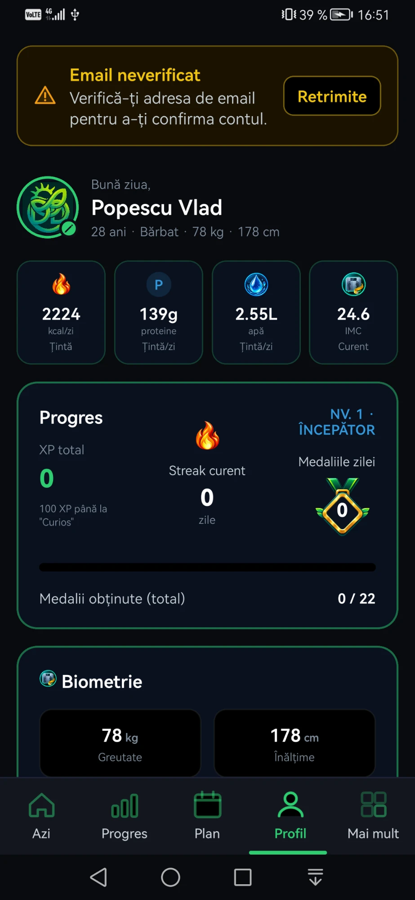
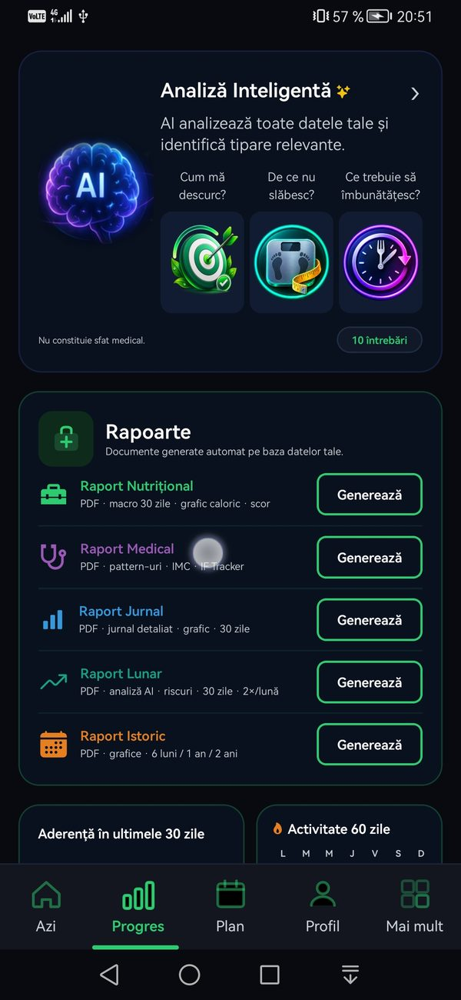

Pentru cine e NutriRO
Fiecare obiectiv.
O soluție clară.
Indiferent de unde pornești, NutriRO se adaptează la tine — nu invers.
Slăbește inteligent,
nu la întâmplare
"Am încercat tot felul de diete. La final tot nu știam ce să mănânc."
- Jurnal alimentar precis — fiecare masă, fiecare ingredient, fiecare calorie
- Antrenor AI personal — analizează blocajele tale specifice și oferă soluții concrete
- Raport nutrițional PDF — 30 de zile de date, grafice calorice, tendințe clare
- Generator meniu 7 zile — calculat exact pe deficitul tău caloric
- Scor de aderență zilnic — știi exact cât de consecvent ești

Proteina potrivită.
La momentul potrivit.
"Merg la sală dar nu știu dacă mănânc suficiente proteine. Sau prea mult. Sau prea puțin."
- Tracking macro precis — proteine, carbohidrați, lipide, per masă
- Surplus caloric calculat — meniu generat pe obiectiv de creștere
- Activitate fizică integrată — 108 activități cu calcul MET, calorii arse la zi
- Raport nutrițional detaliat — media săptămânală per macronutrient
- Peste 1.200 de rețete — cu proteinele și greutatea fiecărei porții

Date exacte.
Rapoarte pentru medic.
"Doctorul mi-a zis să țin evidența alimentației. E complicat și nu știu ce să notez."
- Raport Medical PDF — IMC, pattern-uri alimentare, IF Tracker, exportabil
- Tracking sare / sodiu — limită personalizată, alertă vizuală la depășire
- Post intermitent (IF Tracker) — protocoale 16:8, 18:6, 20:4 cu notificări
- Raport Nutrițional PDF — 30 de zile de medii zilnice, gata de arătat medicului
- Health Connect — sincronizare automată pași și activitate fizică

Obiceiuri sănătoase.
Vizualizate clar.
"Cred că mănânc ok, dar nu știu sigur. Vreau să înțeleg ce pun în corp."
- Nutrition Score 0-100 — scor zilnic calculat din 7 piloni: calorii, proteine, carbohidrați, lipide, sare, hidratare, fibre
- Heatmap activitate 60 zile — vizualizează consistența obiceiurilor tale
- Recunoaștere AI alimente — fotografiezi farfuria, AI identifică ingredientele
- Analiză săptămânală AI — ce să îmbunătățești, pe datele tale
- Sistem de medalii — 22 de medalii care fac nutriția motivantă